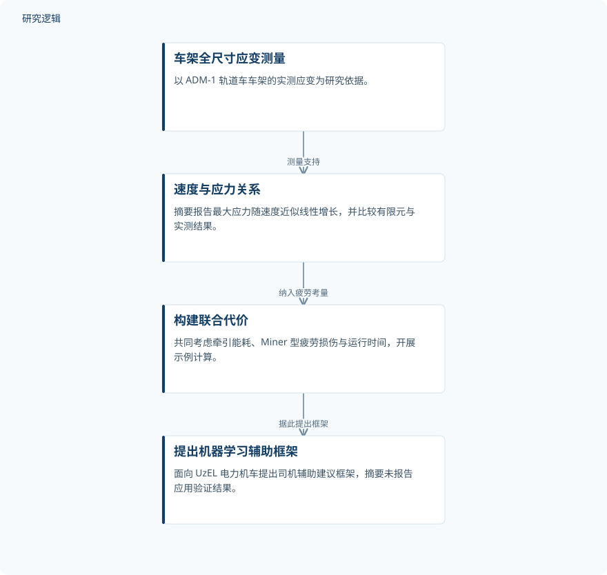

摘要解读
疲劳约束下的机车节能速度建议：从车架应变测量到人工智能框架
Fatigue-Constrained Energy-Efficient Speed Advisory for Rolling Stock: From Frame Strain Measurements to an AI-Based Framework for Electric Locomotives
解读更新 2026-11-10 11:15 · 依据公开摘要整理，未核验全文细节
列车节能速度优化，是否也应考虑车架的疲劳代价？这项研究从实车应变测量出发，将牵引能耗、疲劳损伤与运行时间纳入共同权衡，为理解“节能速度”与“结构承受能力”的关系提供了切入点。
文章目录
速度优化不应只看能耗与时间
摘要指出，节能列车控制通常围绕牵引能耗和运行时间优化速度，而车架结构疲劳往往被视为固定的设计属性。本文提出，速度也会驱动疲劳损伤，因此结构疲劳应进入同一优化问题，而不只是作为独立的设计背景。
从实车应变测量走向联合代价
研究依据是在乌兹别克斯坦运营的 ADM-1 特种自行式轨道车车架全尺寸应变片试验。测量使用十六个通道，记录速度为 10、30、55 和 60 km/h，并将有限元结果与实测结果进行比较。
在此基础上，作者构建包含牵引能耗、Miner 型疲劳损伤和运行时间的联合代价，并开展示例计算。面向 UzEL 电力机车的机器学习司机辅助建议框架，则是基于上述工作提出的应用构想。
依据摘要整理的研究过程示意


概括实车测量、联合代价与拟议辅助建议框架之间的关系，不代表论文原图或已经验证的应用流程。
下载 SVG图示关系说明
实线表示相邻阶段的信息流，虚线表示跨阶段联系或反馈。
车架全尺寸应变测量 → 速度与应力关系：测量支持；速度与应力关系 → 构建联合代价：纳入疲劳考量；构建联合代价 → 提出机器学习辅助框架：据此提出框架
应力随速度上升，最优巡航速度低于强度界限
摘要报告，有限元结果与测量结果的一致程度在 5–10% 范围内；最大应力随速度近似线性增长，R² 的中位数为 0.92。这些结果为将速度与结构响应共同考虑提供了实测依据。
受载最重的位置位于柴油机梁下方，应力梯度为 2.73 MPa per km/h；按照 GOST 31846-2012，约在 54 km/h 时达到 152.75 MPa 的许用应力。联合代价的示例计算显示，最优巡航速度明显低于强度界限，但摘要未给出具体最优速度。
实车证据与电力机车应用之间仍有边界
仅凭摘要，无法判断试验涉及多少车辆、多少次重复测量，以及线路、载荷和运行条件的覆盖范围；也无法核对有限元比较误差的具体定义。已报告的速度—应力关系，不宜直接推广为所有车辆和工况下的规律。
摘要未交代联合代价的权重、疲劳参数和示例计算的比较基准，也未报告机器学习框架的训练数据、验证方式或实际节能与寿命效果。因此，应区分已报告的测量结果、示例计算和拟议框架，不能将后者视为已经完成的应用验证。
阅读启发：关注疲劳如何进入速度建议
阅读启发：值得进一步阅读的是，实测应力如何转化为 Miner 型疲劳损伤，以及能耗、损伤和时间如何共同影响速度选择。对于智能运维，更应关注从 ADM-1 车架证据转向 UzEL 电力机车建议时的适用条件，而不是仅凭“机器学习”名称判断应用成熟度。
以上为本站阅读启发与建议，不是论文已验证的结论。